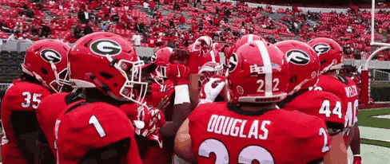
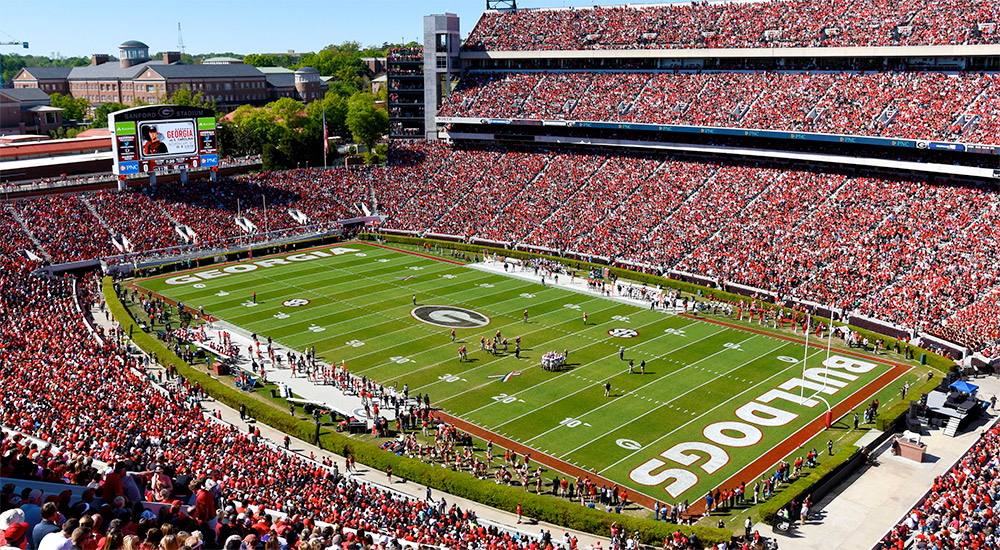
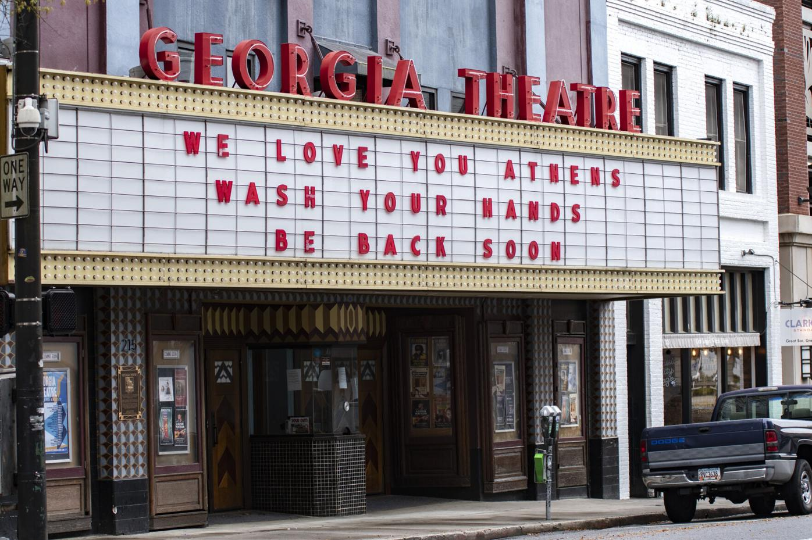
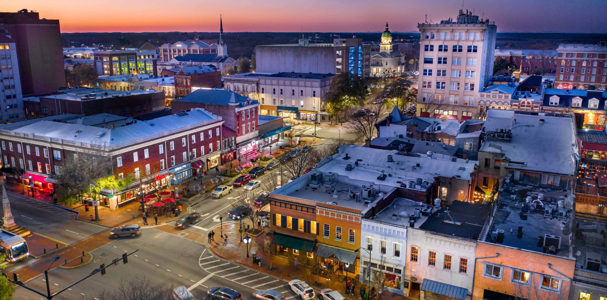
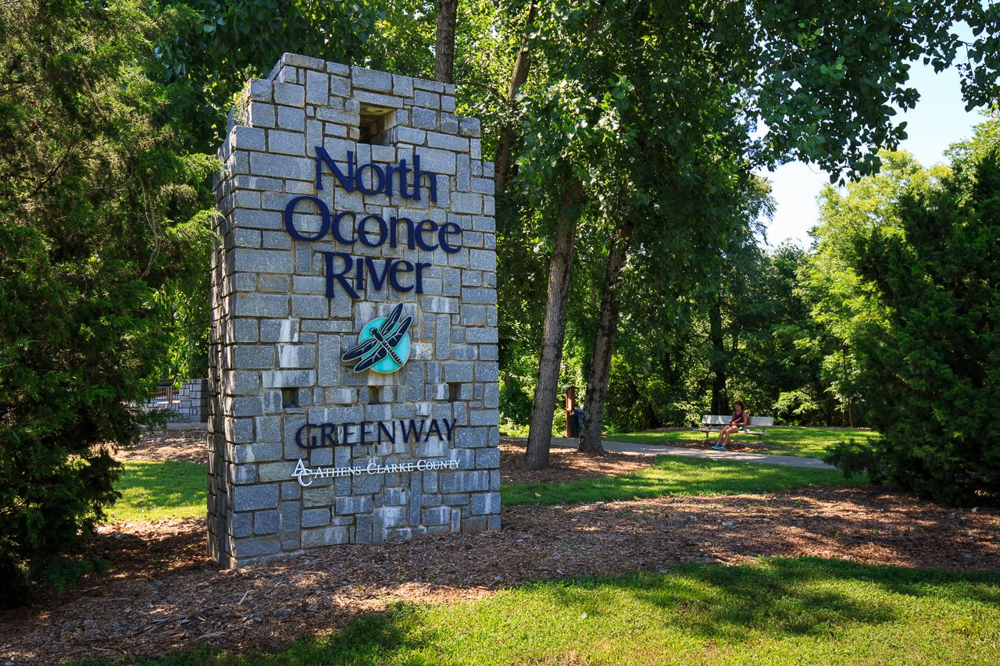
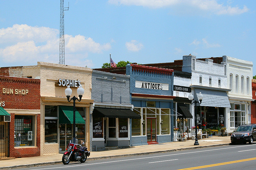
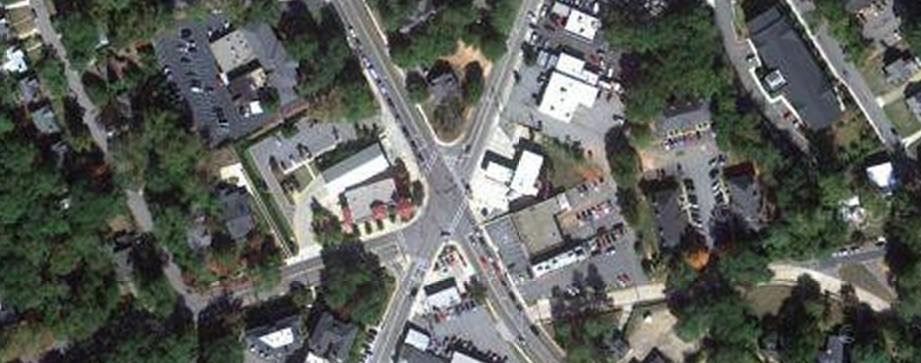

Athens, GA
 Geographical Location: North America
Athens is in Northeast Georgia. Athens has a population of around 130,000 people. There are lots of bars, restaurants, and parks in Athens, and it is known for its music scene. Athens is home of the band R.E.M. and many others.
Athens is also known as the “Home of the Dawgs”, since it is where the University of Georgia is located. The University of Georgia is a highly ranked public university. UGA has a total enrollment size of 40,000 students. UGA is also known for its football team, who has won the past two national championships.
Photo Gallery
The Georgia Theatre is a live music venue space in Athens, which also has a roof-top bar.
Downtown is one of the most popular areas in Athens, as it contains many restaurants, bars, and shops for people visiting.
The greenway is a set of paved paths and hiking trails located along the Oconee River that is great for walking, running, and even biking.
Normal town is another section of Athens, which is known to be more hippie and casual. You would likely find residents located in Normal town over tourists.
Five Points is a five-way intersection located in a residential part of Athens. Nearby you can find sorority row for UGA, many houses, and a local high school.